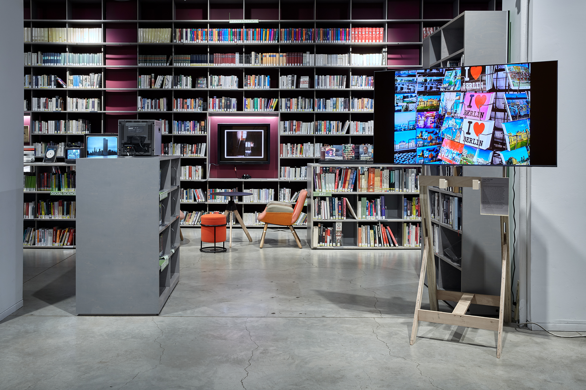
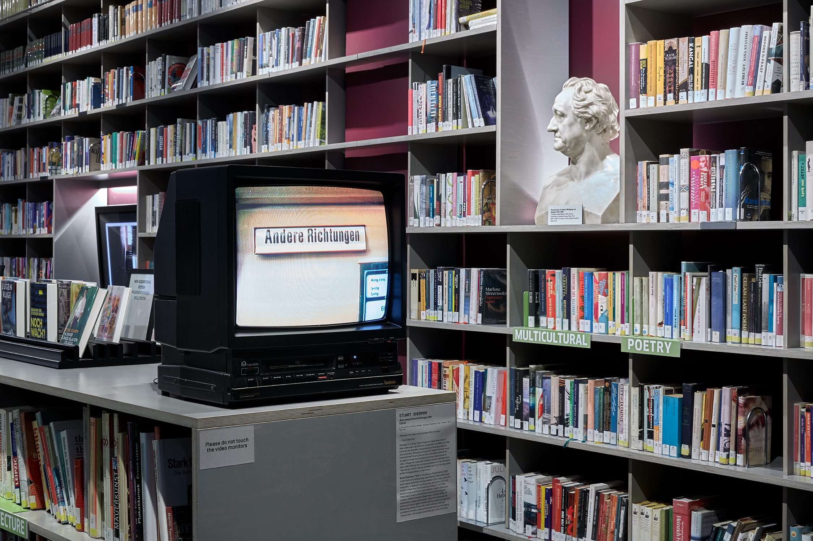
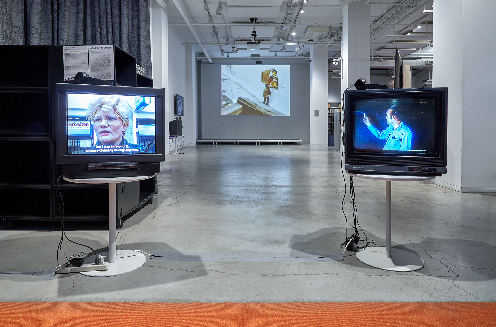
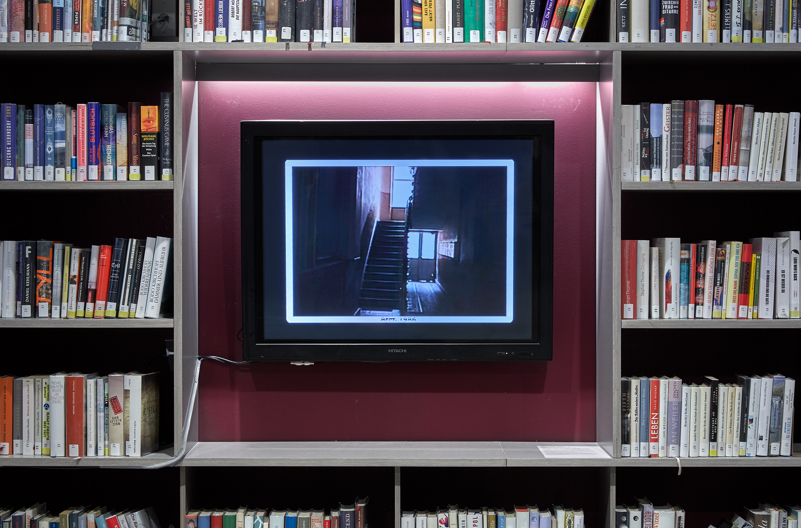
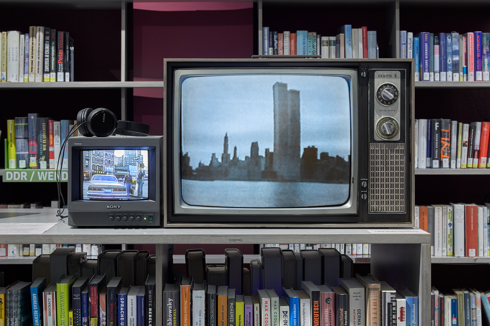
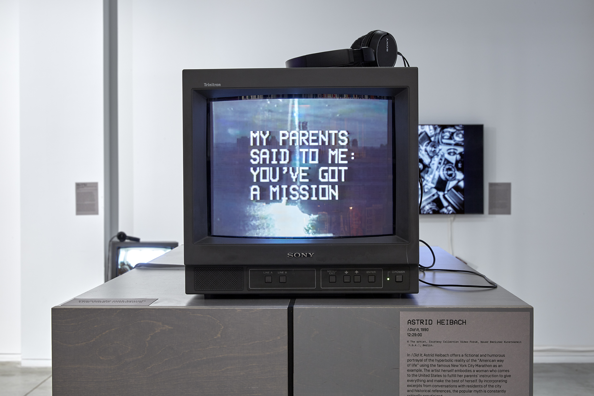
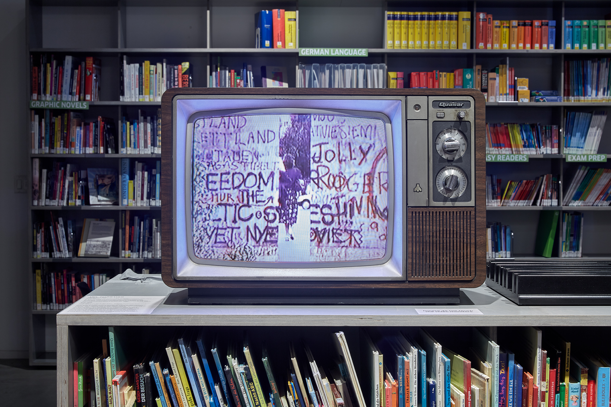
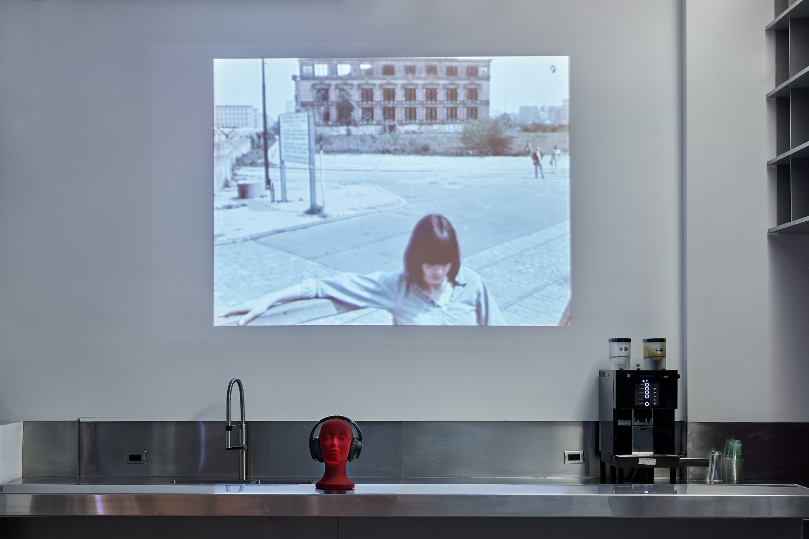

City Scenes: Video Art from the Collections of n.b.k. and EAI
Goethe-Institut New York
Co-curator with Anna Lena Seiser (n.b.k. Video-Forum) and Karl McCool (EAI)
Video still Stuart Sherman: Berlin (West)/Andere Richtungen, 1986. © The Estate of Stuart Sherman, Courtesy Electronic Arts Intermix (EAI), New York.
The selection of films and videos presented in this exhibition range from the mundane daily ways of life; to whimsical pontifications on the randomness of the world; to the origins of bizarre urban legends; and to sardonic analysis of cultural supremacy. Assembled in one space, the works attempt to capture the eccentricities of their city-setting and make sense of the world through video-making practices from the early 1970s to the present day. Moreover, the videos also document and remark on the state of politics and life both before and after the symbolic collapse of the Iron Curtain/Berlin Wall, and both before and after the physical collapse of the World Trade Towers in the attacks on September 11th. Often eerily preempting an unknown future at the time of its making, the works in this exhibition retrospectively indicate the artists’ sense that the world is about to, or has just experienced a new cultural paradigm.
Placing on view the systems of video production and distribution that undergird many of these works, this exhibition brings together for the first time videos from the collections of the Neuer Berliner Kunstverein (n.b.k.) and the Electronic Arts Intermix (EAI) — video art producers, distributors, and archives both founded in 1971 and based in Berlin and New York City respectively. Whether produced as a result of a DAAD fellowship, n.b.k. or EAI production, or independently funded, these works speak to the interconnectivity of Berlin and New York City as metropoles for the creatively minded, resulting in unique and robust art scenes.
Featured Artists:
Nina Fischer and Maroan el Sani, Astrid Heibach, K.H. Hödicke (with Cornelia Balcerowiak and Helmut Wietz), Ken Kobland, Gordon Matta-Clark, John Miller, Ira Schneider, Stuart Sherman, Shelly Silver, and Lawrence Weiner
A joint project by Goethe-Institut New York, Neuer Berliner Kunstverein (n.b.k.), and Electronic Arts Intermix (EAI). Exhibition design provided by Darling Green.
More information here.
City Scenes: Video Art from the Collections of n.b.k. and EAI. Installation view, Goethe-Institut New York, 2023. Photo: Courtesy of Marc Tatti.
City Scenes: Video Art from the Collections of n.b.k. and EAI. Installation view, Goethe-Institut New York, 2023. Photo: Courtesy of Marc Tatti.
City Scenes: Video Art from the Collections of n.b.k. and EAI. Installation view, Goethe-Institut New York, 2023. Photo: Courtesy of Marc Tatti.
City Scenes: Video Art from the Collections of n.b.k. and EAI. Installation view, Goethe-Institut New York, 2023. Photo: Courtesy of Marc Tatti.
City Scenes: Video Art from the Collections of n.b.k. and EAI. Installation view, Goethe-Institut New York, 2023. Photo: Courtesy of Marc Tatti.
City Scenes: Video Art from the Collections of n.b.k. and EAI. Installation view, Goethe-Institut New York, 2023. Photo: Courtesy of Marc Tatti.
City Scenes: Video Art from the Collections of n.b.k. and EAI. Installation view, Goethe-Institut New York, 2023. Photo: Courtesy of Marc Tatti.
City Scenes: Video Art from the Collections of n.b.k. and EAI. Installation view, Goethe-Institut New York, 2023. Photo: Courtesy of Marc Tatti.
City Scenes: Video Art from the Collections of n.b.k. and EAI. Installation view, Goethe-Institut New York, 2023. Photo: Courtesy of Marc Tatti.